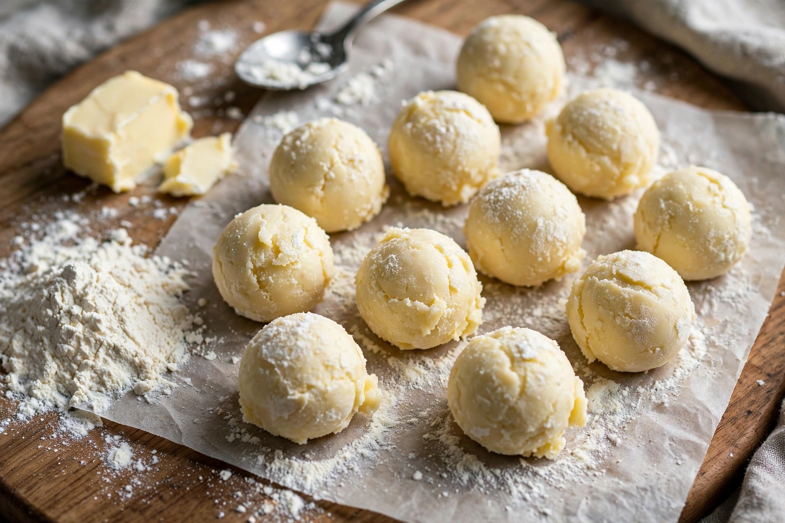

Beurre manié (French for “kneaded butter”) is a dough of equal parts soft butter and flour, used to thicken soups, sauces, and stews at the end of cooking.
The butter and flour are kneaded or mashed together until smooth, then whisked in small pieces into a simmering liquid. Because the fat coats the flour particles, they disperse without forming lumps, and the sauce thickens as it returns to a brief boil.
Unlike a roux, beurre manié is added raw at the end of cooking rather than cooked first, so it adds a fresh butter flavour but must be simmered briefly to remove raw-flour taste. It is a classic technique of French cuisine alongside liaison and slurry thickeners. Compare the sweet butter preparation in butterscotch.